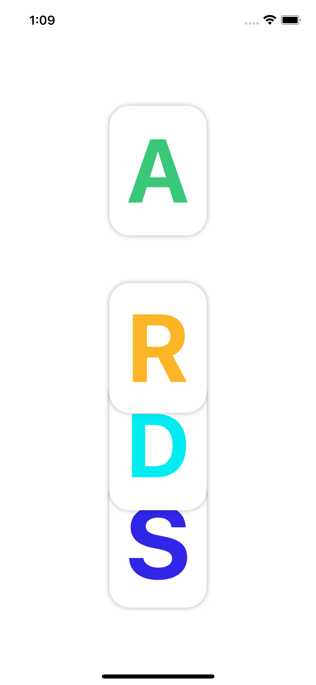
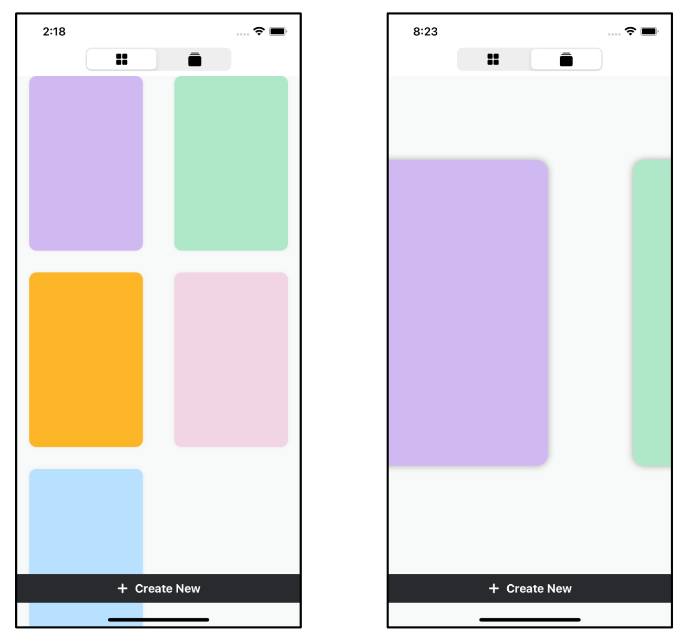

第21章：愉悦的用户体验--最后的修饰¶
一个iOS应用没有一些时髦的动画是不完整的。SwiftUI使得改变属性值时发生的事件的动画化变得非常容易。过渡动画是一件轻而易举的事。
为了在测试动画时获得最佳效果，你应该在一个设备上运行应用程序。动画通常不会在预览中工作，但是，如果你不想使用设备，它们通常会在模拟器中工作。
启动项目¶
➤ 打开本章的启动项目。
- 这个项目有一个额外的组，叫做支持代码。这个组包含一些复杂的视图，你很快就会把它们添加到你的应用程序中。
Card包含两个额外的属性。你将使用image来显示卡片的缩略图，shareImage在分享卡片时保存屏幕截图。ViewState包含一个额外的属性来协助分享屏幕截图。
作为提醒，该项目仍然使用默认数据，而不是你的目录数据，所以目前保存卡片的效果并不好。
动画飞溅屏幕¶
本节将学习的技能：为动画设置属性
有时在一个比较复杂的应用程序中，在显示启动屏幕后，你的应用程序会花几秒钟时间来做所有的加载内务工作。为了防止用户界面出现停滞，应用程序可以执行一个动画来分散用户的注意力。像Twitter和Uber这样的应用程序使用动画来反映他们的品牌形象。
你将创建一个动画闪屏，字母C-A-R-D-S将从顶部下降，当该动画完成后，动画视图将滑动到主卡视图。
➤ 在卡片组中，在CardsApp.swift下，创建两个新的SwiftUI视图文件，名为AppLoadingView.swift和SplashScreen.swift。
➤ 打开AppLoadingView.swift。这个视图将决定是否要显示动画。
➤ 在AppLoadingView中创建一个新属性：
@State private var showSplash = true
➤ 将body改为：
var body: some View {
if showSplash {
SplashScreen()
.edgesIgnoringSafeArea(.all)
} else {
CardsView()
}
}
当showSplash为真时，你会显示飞溅动画，否则你会显示主要的CardsView。目前，你从未将showSplash设置为假，所以CardsView永远不会显示。有时实时预览不能正确显示动画--或者根本不能显示--所以为了在模拟器上看到动画，你要保持这种方式，直到你的飞溅动画完善。
➤ 在AppLoadingView_Previews中，给AppLoadingView添加这个修改器：
.environmentObject(CardStore(defaultData: true))
这样就设置了卡片商店，这样应用程序就可以在实时预览中仍然工作。
➤ 打开CardsApp.swift，将CardsView()改为：
AppLoadingView()
你显示了包含闪屏的中间视图。
➤ 构建和运行，你会看到默认的"Hello World"来自SplashScreen。
➤ 打开SplashScreen.swift，给SplashScreen添加这个新方法：
func card(letter: String, color: String) -> some View {
ZStack {
RoundedRectangle(cornerRadius: 25)
.shadow(radius: 3)
.frame(width: 120, height: 160)
.foregroundColor(.white)
Text(letter)
.fontWeight(.bold)
.scalableText()
.foregroundColor(Color(color))
.frame(width: 80)
}
}
这里创建了一个带有阴影的视图，它接收了一个字母和一个颜色。
➤ 将Text("Hello, World!")改为：
card(letter: "C", color: "appColor7")
在这里，您用字母"C"和资产目录中设置的颜色名称创建视图。
➤ 预览该视图。
你现在有一个固定的卡片。你将把动画运动分离出来，放到一个新的视图修改器中。
➤ 在SplashScreen.swift中，添加一个新结构：
private struct SplashAnimation: ViewModifier {
@State private var animating = true
let finalYPosition: CGFloat
let delay: Double
func body(content: Content) -> some View {
content
.offset(y: animating ? -700 : finalYPosition)
.onAppear {
animating = false
}
}
}
要从顶部放下卡片，你要对内容的偏移量进行动画处理。如果animating是true，那么卡片的偏移量就会离开屏幕顶部的-700点。当false时，偏移量将是最终指定的位置。当视图出现时，你把animating改为false。
你很快就会使用delay属性。
➤ 在SplashScreen中，用body代替：
var body: some View {
card(letter: "C", color: "appColor7")
.modifier(SplashAnimation(finalYPosition: 200, delay: 0))
}
在这里，你用卡的最终Y位置调用视图修改器。
➤ 实时预览视图，你会看到你的卡在中心以下200点，但还没有动画。
SwiftUI动画¶
本节将学习的技能：显式动画；动画计时；用于调试的慢速动画
SwiftUI使任何依赖属性的视图参数的动画化变得异常简单。你只需用一个闭包来包围依赖的属性：
withAnimation {
property.toggle()
}
就这样了! 在你的整个应用程序中，任何依赖于property的参数，都会自动产生动画。
在SplashAnimation中，你的卡片的偏移取决于animating。
➤ 在onAppear(_:)中，将animating = false改为：
withAnimation {
animating = false
}
➤ 实时预览该视图。现在，您的卡片从顶部开始动画化，并在Y偏移量为200时结束。
➤ 在模拟器中构建并运行该应用程序。
➤ 在模拟器中，选择Debug ▸ Slow Animations。这是一个调试功能，可以放慢动画的速度，以便您可以正确地看到它们。现在你会看到菜单项旁边有一个复选标记。
➤ 构建并再次运行该应用，以看到慢动作的动画。
➤ 在SplashScreen中，将body的内容改为：
ZStack {
Color("background")
.edgesIgnoringSafeArea(.all)
card(letter: "S", color: "appColor1")
.modifier(SplashAnimation(finalYPosition: 240, delay: 0))
card(letter: "D", color: "appColor2")
.modifier(SplashAnimation(finalYPosition: 120, delay: 0.2))
card(letter: "R", color: "appColor3")
.modifier(SplashAnimation(finalYPosition: 0, delay: 0.4))
card(letter: "A", color: "appColor6")
.modifier(SplashAnimation(finalYPosition: -120, delay: 0.6))
card(letter: "C", color: "appColor7")
.modifier(SplashAnimation(finalYPosition: -240, delay: 0.8))
}
这就为所有卡片上的字母设置了它们的最终位置和颜色。delay参数还没有做什么，但你很快就会用到它。背景颜色在你的资产目录中。
➤ 实时预览或在模拟器中运行。在这个动画中，所有的卡片都以相同的时间点向下动画，这在美学上并不讨好。
当你使用withAnimation(_:_:)时，你可以指定你想使用什么样的Animation。你可以指定动画的时间，持续时间和是否有延迟。
➤ 在SplashAnimation中，在onAppear(_:)中，将withAnimation {改为：
withAnimation(Animation.default.delay(delay)) {
这里你使用的是带有延迟修改器的默认动画。你已经设置了卡片的延迟。每张卡的延迟都比前一张卡大0.2秒。
➤ 实时预览结果。通过延迟，卡的动画是交错的。

一个Animation可以有各种品质。最常见的是：
easeIn：动画开始时很慢，但到最后会加速。easeOut：动画开始时速度较快，但在结束时速度变慢。easeInOut：前两者的组合。linear：动画的速度一直是恒定的。
➤ 将withAnimation(Animation.default.delay(delay)) {替换为：
withAnimation(Animation.easeOut(duration: 1.5).delay(delay)) {
此动画持续1.5秒，在动画结束时逐渐变慢。
➤ 首先进行实时预览，以查看1.5秒内的动画。然后在模拟器上建立并运行慢速动画。您可以看到，在动画结束时，卡片落在一起的距离更近了。
一个更有趣的Animation是一个弹簧，视图像弹簧一样弹跳。你可以指定它的硬度和弹跳停止的速度。
➤ 在SplashAnimation中，将withAnimation(_:_:)闭包替换为：
withAnimation(
Animation.interpolatingSpring(
mass: 0.2,
stiffness: 80,
damping: 5,
initialVelocity: 0.0)
.delay(delay)) {
animating = false
}
➤ 实时预览这一点，你会看到每张卡在到达其偏移位置时都会弹起。实验一下这些弹簧属性的每个值，看看它们是如何影响动画的。
为了完成这个动画，给每张卡片添加一个随机旋转。
➤ 在SplashAnimation中，在offset(y:)之后，添加这个：
.rotationEffect(
animating ? .zero
: Angle(degrees: Double.random(in: -10...10)))
卡片在下降过程中会随机旋转到-10和10度之间的动画。
➤ 实时预览，您将看到您的最终动画。
显性和隐性动画¶
本节将学习的技能：隐式动画
withAnimation(_:_:)显式地引起动画，其参数受其封闭内的属性影响。如果你有多个属性在变化，你可以显式地改变每个属性的动画。
对于隐式动画，您可以自动对任何具有可动画参数的视图进行动画。
➤ 在SplashAnimation中，删除withAnimation(_:_:)闭包，因此onAppear(_:)是：
.onAppear {
animating = false
}
这将删除所有的动画。
➤ 在旋转效果修改器之后添加这个：
.animation(
Animation.interpolatingSpring(
mass: 0.2,
stiffness: 80,
damping: 5,
initialVelocity: 0.0)
.delay(delay))
这将为视图添加一个隐含的动画。每当任何可动画的属性影响到视图时，就会为这个视图描述要使用的动画。
➤ 实时预览该动画。
在这种情况下，由于只对具有一个可动画属性的视图进行动画处理，因此隐式动画的显示与显式动画完全相同。显式动画可以减少代码，但隐式动画可以让你有更多的控制权，可以根据不同的动画属性为每个视图制作动画。
动画过渡¶
本节中你将学习的技能：过渡
你现在要把你的闪亮屏幕过渡到主的CardsView。SwiftUI通过内置的过渡效果使之变得简单，但你也可以完全控制视图的过渡方式。
➤ 打开AppLoadingView.swift。
➤ 在edgesIgnoringSafeArea(.all)之后，添加：
.onAppear {
DispatchQueue.main.asyncAfter(deadline: .now() + 1.5) {
withAnimation(.linear(duration: 5)) {
showSplash = false
}
}
}
这里你把showSplash设置为false，在延迟后使用显式动画。showSplash控制显示哪个视图。你想让闪屏显示一到两秒，然后过渡到主视图。
在测试这种过渡时，在模拟器中放慢动画的速度效果并不好，所以你给过渡动画一个缓慢的持续时间，即5秒，看看发生了什么。
➤ 在模拟器中，选择Debug ▸ Slow Animations来关闭慢速动画。
➤ 由于实时预览不能很好地处理过渡动画，因此构建并运行该应用程序。
默认的过渡是在一个视图到另一个视图之间做不透明的淡化。
➤ 在AppLoadingView中，为CardsView()添加一个修改器：
.transition(.slide)
➤ 建立并运行，以看到幻灯片在指定的五秒时间内的过渡。
除了opacity和slide之外，还有一些自动转换的功能：
move：允许你指定新的视图从哪个边缘移动。scale：新的视图会放大。
你还可以通过使用以下方法为每个方向提供不同的过渡：
.transition(.asymmetric(insertion: .slide, removal:.scale))
➤ 将过渡期改为：
.transition(.scale(scale: 0, anchor: .top))
这将使新的视图从顶部缩进。
➤ 将withAnimation(.linear(duration: 5)) {替换为：
withAnimation {
这将用默认的过渡持续时间取代五秒钟的持续时间。
➤ 建立并运行以查看完成的闪屏动画和过渡。
从卡片列表过渡到单一卡片¶
本节将学习的技能：正确的过渡视图层顺序
当你在滚动的卡片列表中点击一个卡片时，过渡非常突然。
➤ 打开CardsView.swift，为SingleCardView添加一个新的修改器：
.transition(.move(edge: .bottom))
这个过渡将从底部边缘滑入新的视图。如果你建立并运行应用程序，还没有过渡动画发生，因为你还没有配置哪个属性要做动画。
布尔属性ViewState.showAllCards控制显示哪个视图，所以你要找到这个属性的切换位置。
➤ 打开CardsListView.swift，在onTapGesture(count:perform:)中，将viewState.showAllCards.toggle()改为：
withAnimation {
viewState.showAllCards = false
}
当viewState.showAllCards改变为false时，现在将在所有使用此属性的地方触发动画。
➤ 同样地，打开CardsView.swift，在createButton中，将viewState.showAllCards = false改为：
withAnimation {
viewState.showAllCards = false
}
现在，创建一个新卡也会执行过渡。
➤ 在Views/Single Card Views组中，打开CardToolbar.swift并找到Done按钮。
➤ 将viewState.showAllCards.toggle()改为：
withAnimation {
viewState.showAllCards = true
}
➤ 构建和运行并选择一张卡片。虽然最初的幻灯片过渡发生了，但按下Done时的过渡效果并不好。卡片视图在卡片列表的后面过渡。你可以放慢模拟器的动画，以便更好地看到这一点。
➤ 打开CardsView.swift，为SingleCardView添加一个新的修改器：
.zIndex(1)
zIndex控制视图在彼此上方时的顺序。zIndex为1的视图将显示在zIndex为0的视图前面。
过渡时，新的视图会移到旧的视图后面，所以为了保持卡片视图在前面，你要把SingleCardView的zIndex改为高于CardsListView的。
➤ 构建并运行，从卡片到列表的过渡动画现在在前面发生了。
支持多种视图类型¶
本节将学习的技能：挑选器控制
你将在卡片列表的顶部添加一个拾取器视图，以选择你查看卡片的方式。你可以在滚动的列表中查看它们，也可以在旋转木马中查看。当你有一组相互排斥的值时，你可以用一个挑选器控件来决定它们之间的关系。
有各种挑选器样式用于互斥的挑选。例如，WheelPickerStyle在一个可滚动的轮子中显示选项。苹果的时钟应用在定时器上使用了一个轮子选取器。你将使用SegmentedPickerStyle，它是一个水平控件，一次可以容纳一个值。

旋转木马¶
Carousel.swift，包含在支持代码组的启动项目中，是一个用于列出卡片的替代视图。它是一个TabView的例子，类似于你在第1节中创建的那个。
➤ 打开Carousel.swift并实时预览该视图。滑动来查看每个卡片。
每张卡片应该占据设备屏幕的大部分，所以代码使用GeometryReader来确定大小。这段代码对你来说应该没有什么新意。SwiftUI的一大优势是，你可以得到一个这样的视图，把它插入你自己的代码中是很容易的事情。
添加一个选取器¶
➤ 在视图组中，在CardsView.swift下，创建一个名为ListSelectionView.swift的新SwiftUI视图文件。
➤ 为ListSelectionView添加一个新的绑定：
@Binding var selection: CardListState
CardListState是ViewState.swift的一个枚举，可以取两个值之一。list和carousel。selection保存当前的选取器选择。
➤ 更新ListSelectionView_Previews以传递list的初始选择：
static var previews: some View {
ListSelectionView(selection: .constant(.list))
}
➤ 在ListSelectionView中，用body代替：
var body: some View {
// 1
Picker(selection: $selection, label: Text("")) {
// 2
Image(systemName: "square.grid.2x2.fill")
.tag(CardListState.list)
Image(systemName: "rectangle.stack.fill")
.tag(CardListState.carousel)
}
// 3
.pickerStyle(SegmentedPickerStyle())
.frame(width: 200)
}
通过这个代码：
- 你使用一个
Picker，传入要更新的选择属性。 - 你为每个选项分配
SFSymbols。当用户选择一个选项时，tag(_:)修改器将用指定的值更新selection。 - 你告诉
Picker使用什么样的选取器样式。
➤ 预览拾取器。
在应用程序中，当你点击右段时，卡片应该显示在旋转木马中；点击左段将在滚动的列表中显示它们。
➤ 打开CardsView.swift，将ZStack嵌入到VStack中。
VStack {
ZStack {
...
}
}
➤ 在VStack的顶部，添加这段代码：
if viewState.showAllCards {
ListSelectionView(selection: $viewState.cardListState)
}
如果你要显示所有的卡片，请显示挑选器，这样你就可以决定如何查看它们。
➤ 将 CardsListView()改为：
switch viewState.cardListState {
case .list:
CardsListView()
case .carousel:
Carousel()
}
您可以根据视图状态显示滚动的列表或旋转木马。
➤ 构建并运行，以查看选取器的运行情况。

分享卡片¶
本节将学习的技能：共享表；UIActivityViewController；照片库权限
目前，当你创建一个卡片时，你是唯一可以欣赏它的人。作为最后一个功能，你将添加分享。
你将在导航栏上创建一个分享按钮。点击这个按钮，你就会对卡片进行屏幕截图。然后，你将在提供标准服务的内置视图控制器中使用这个屏幕截图，通常称为分享视图，用于分享到其他应用程序，如电子邮件或你的照片库。
为了便于跟踪共享状态，启动项目添加了两个新属性。
- 在
Card.swift中，shareImage将暂时存储用于共享的屏幕截图图像。 - 在
ViewState.swift中，shouldScreenshot将在设置为true时触发截图。
目前在SwiftUI中，没有一个简单的方法来创建屏幕截图，所以你将使用一个预制的RenderableView，代码在启动项目的支持代码组中。
➤ 打开CardDetailView.swift，在body中，将GeometryReader嵌入到一个新的Container中，方法是用命令点击GeometryReader，从出现的菜单中选择嵌入...。
➤ 将Container重命名为:
RenderableView(card: $card)
RenderableView是一个@ViewBuilder，你在一个封闭中发送内容视图。你已经在第10章"完善你的应用程序"中创建了一个简单的容器视图，其他的@ViewBuilder的例子有。VStack，Button和GeometryReader。使用ViewModifier，一个视图通过修改器来创建一个新的视图。然而，使用@ViewBuilder，你可以在闭合中提供多个视图并创建一个新的视图。
你在RenderableView中嵌入卡片内容视图，当viewState.shouldScreenshot为真时，该视图将进行截图。RenderableView也会在视图消失时将卡片的缩略图保存到磁盘上。你将在本章的后面使用这个缩略图。
➤ 定位：
.modifier(CardToolbar(currentModal: $currentModal))
.cardModals(card: $card, currentModal: $currentModal)
➤ 剪下这两行，粘贴在body的末尾，这样它们就是RenderableView上的修改器，而不是content(size:)上的。
不久，你将在CardModalViews中创建一个分享按钮，你从cardModals(card:currentModal:)中调用它。一般来说，你应该从尽可能高的层次创建模态视图。在这种情况下，如果你把修改器留在content(size:)上，系统会感到困惑，并在第一个共享表的上面呈现第二个共享表。你也会在调试控制台上得到一个不舒服的信息。不鼓励从分离的视图控制器中呈现视图控制器...。
➤ 在模型组中，打开CardModal.swift，为CardModal添加一个新的案例：
case shareSheet
➤ 在Views ▸ Single Card Views组中，打开CardToolbar.swift。
➤ 将这段代码与其他ToolbarItem一起添加到toolbar(content:)：
ToolbarItem(placement: .navigationBarLeading) {
Button(action: {
viewState.shouldScreenshot = true
currentModal = .shareSheet
}) {
Image(systemName: "square.and.arrow.up")
}
}
这里你在导航栏的前缘创建一个分享按钮。当用户点击这个按钮时，viewState.shouldScreenshot会在RenderableView中触发一个截图，将截图保存在card.shareImage中。该按钮还将当前模态设置为共享表。
➤ 在Views ▸ Single Card Views组中，打开CardModalViews.swift。
➤ 在body中，为switch语句添加一个新案例：
case .shareSheet:
if let shareImage = card.shareImage {
ShareSheetView(
activityItems: [shareImage],
applicationActivities: nil)
.onDisappear {
card.shareImage = nil
}
}
在这里，你把截图传给ShareSheetView并显示模式。这个视图控制一个UIActivityViewController在UIViewControllerRepresentable里面，并且在支持代码的ShareSheetView.swift中为你创建。
➤ 打开SingleCardView.swift并预览该视图以看到你的分享按钮。
➤ 建立并运行该应用程序，并选择一张卡片。点一下左上方的共享表图标。卡片视图现在会渲染成屏幕截图图像，并将其传递给共享表。
➤ 选择保存图像，将图像保存到照片库中。

该应用程序将崩溃并出现错误：
This app has crashed because it attempted to access privacy-sensitive data without a usage description. The app’s Info.plist must contain an NSPhotoLibraryAddUsageDescription key with a string value explaining to the user how the app uses this data.
每当您的应用程序首次将图像添加到照片库时，您必须获得用户的许可，并让他们知道您将如何使用库中的数据。
➤ 在项目导航器中，选择顶部的卡片组。沿着顶部选择目标卡和信息。
➤ 添加一个新的键NSPhotoLibraryAddUsageDescription，或Privacy - Photo Library Additions Usage Description。
➤ 在值字段中，添加：
Cards will save your card to the photo library
这是你的用户将看到的信息，所以你可以添加一些关于不将他们的个人数据用于邪恶目的的舒缓内容。
➤ 再次构建并运行该应用，并选择一张卡片。分享卡片并再次将图像保存到照片库中。这一次，该应用要求获得保存到照片的许可，显示你在信息键中输入的信息。
➤ 点确定，该卡将保存到照片库中。在模拟器上查看照片应用程序，看看你的照片库。
如果你在安装了邮件、信息或任何分享应用程序的设备上运行该应用程序，你也可以通过这些应用程序分享图片。
挑战¶
在你的应用程序即将完成时，在CardsApp中，将CardStore改为使用真实数据而不是默认的预览数据。在模拟器中删除所有内容和设置，以确保应用程序中没有卡片。
挑战1：缩略图¶
当你点击卡片上的Done时，RenderView会消失，并在文档中保存一个与卡片ID相同名称的缩略图文件。你可以在滚动的屏幕上使用这个缩略图，以代替当前的彩色背景。
在CardThumbnailView.swift中，加载这个图片文件。在UIImageExtensions中有一个load(uuidString:)方法。如果加载成功，显示图片。如果不是，就显示卡片的背景颜色。把两个备选视图放在一个Group中，并把修改器放在组上，而不是放在背景色上。
挑战2：改变文本输入模式的视图¶
在支持代码组中，你会发现一个名为TextView.swift的增强型文本输入视图，它可以让用户在输入文本时挑选字体和颜色。在AppFonts.swift中，有一个iOS上可用的一些字体的列表。
首先，预览和检查TextView，确保你理解它。SwiftUI的视图看起来很复杂，但你以前几乎遇到过这个文件中的所有东西。
你的挑战是将这个视图添加到当前TextField下的模态视图TextPicker中。
用新的字体和颜色，为当前在TextField中输入的文本设置样式。使用.font(.custom(textElement.textFont, size: 30))来设计字体。
在模拟器中运行应用程序来测试视图，因为文本元素在预览中不会随着字体和颜色的变化而更新。
当你完成这些挑战时，你应该对自己很满意。你已经努力构建了一个具有一些非常棘手的功能的应用程序。不过，不要满足于你的成就。你还有第3节要完成!
关键点¶
- 使用
withAnimation(_:_:)闭包可以很容易地实现动画，并使一个好的应用程序变得更好。 - 你可以用
withAnimation(_:_:)显式地制作动画，或者用animation(_:)修改器隐式地制作每个视图。 - 使用
transition(_:)修改器也很容易实现过渡。记得在控制过渡的属性上使用withAnimation(_:_:)，这样过渡才会有动画。 - 挑选器视图允许用户从一组值中挑选一个。你可以有一个轮子式的挑选器或一个分段式的挑选器。
- 在
UIViewControllerRepresentable内使用内置的UIActivityViewController，可以很容易地分享或打印图片。
接下来去哪？¶
你现在可能想把所有可能的东西都做成动画。iOS Animation by Tutorials这本书可以通过专业版订阅获得https://bit.ly/3roiqMa，其中有两章完全是关于SwiftUI的动画和转场。
有复杂布局和动画的应用程序的一个很好的例子是苹果公司的Fruta示例应用程序https://apple.co/2XE8tNF。这是一个功能齐全的应用程序，"用户可以订购冰沙，保存喜欢的饮料，收集奖励，并浏览食谱"。Fruta也有各种功能，如部件，你将在第3节中了解。下载该应用程序，看看你是否能搞清楚这一切是如何结合在一起的。